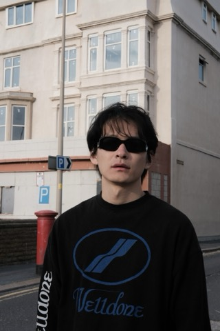
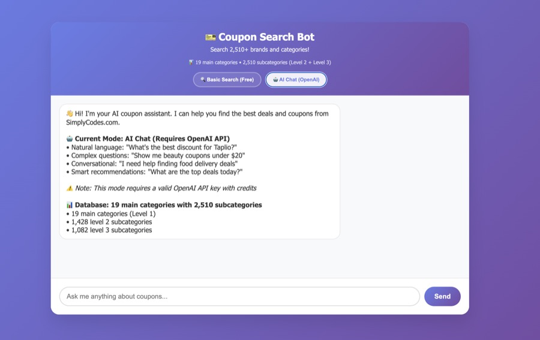
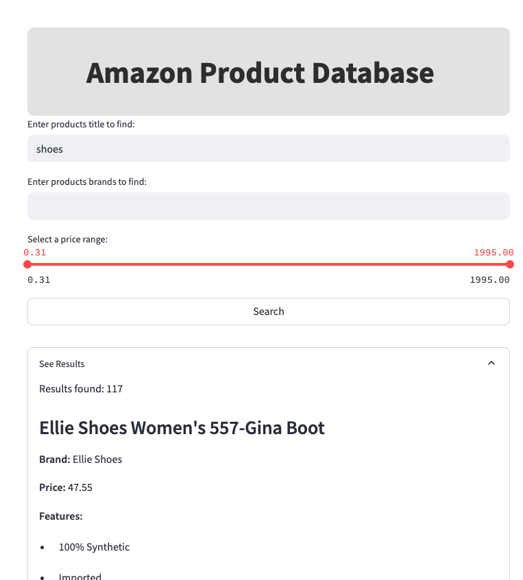
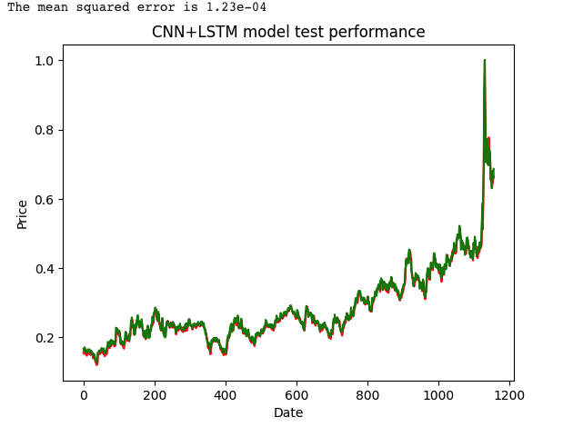

Applied Data Science · Machine Learning
Applied Data Scientist · Machine Learning Engineer
MS in Applied Data Science from USC. I design, train, and ship machine learning models across computer vision, generative modeling, and retrieval-augmented systems — from fine-tuning DETR on KITTI to building a full RAG chatbot from scratch.

Where I studied
University of Southern California · GPA 3.85
University of Liverpool · First Class, GPA 3.7
Xi'an Jiaotong–Liverpool University · GPA 3.7
What I work with
Where I've worked
Henan Changlv Group Real Estate Co., Ltd.
USC Mark & Mary Stevens Neuroimaging and Informatics Institute
Eth Tech
Yisen Tech
Selected work
Fine-tuned a DEtection TRansformer for object detection on the KITTI dataset, building a custom PyTorch data pipeline and adapting the model's classification head to KITTI's label space.

Dual-mode web chatbot that lets users search 2,510+ brands and categories scraped from SimplyCodes — a fast Basic Search API alongside an OpenAI-powered AI Chat mode with semantic search and conversational memory.

A distributed MongoDB system for Amazon product data, focused on performance, scalability, and a usable interface for e-commerce data management.

Compared deep learning models for predicting commodity close prices from historical data, evaluating effectiveness across several architectures.
Get in touch
Open to roles and collaborations in machine learning engineering, computer vision, and applied data science.